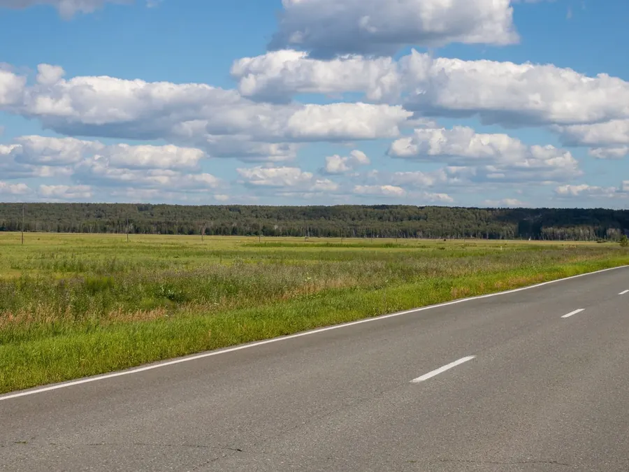
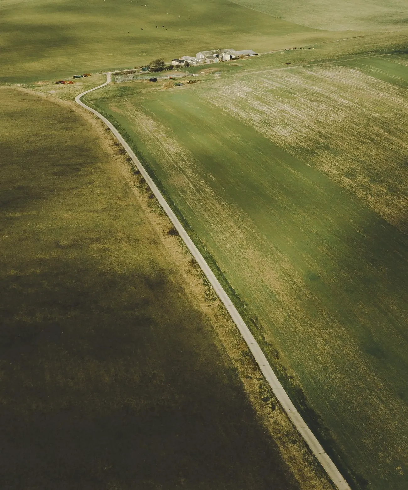
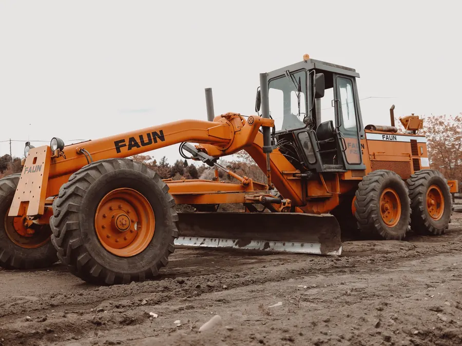
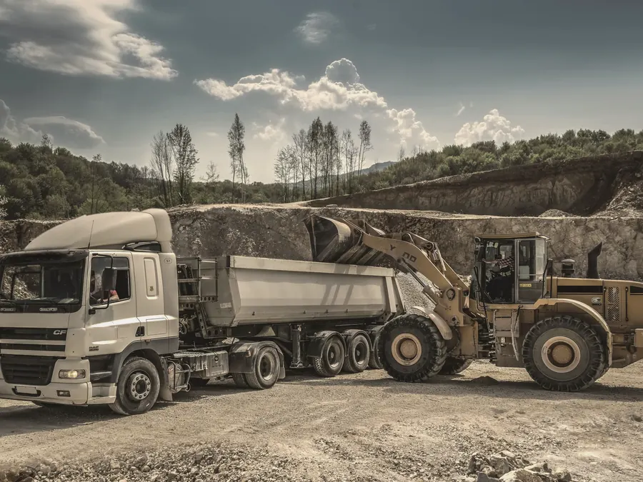
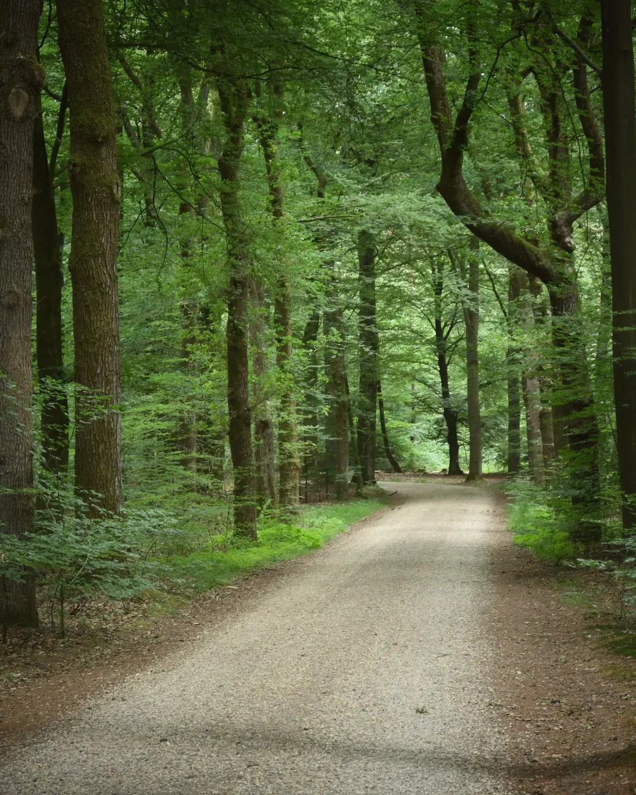
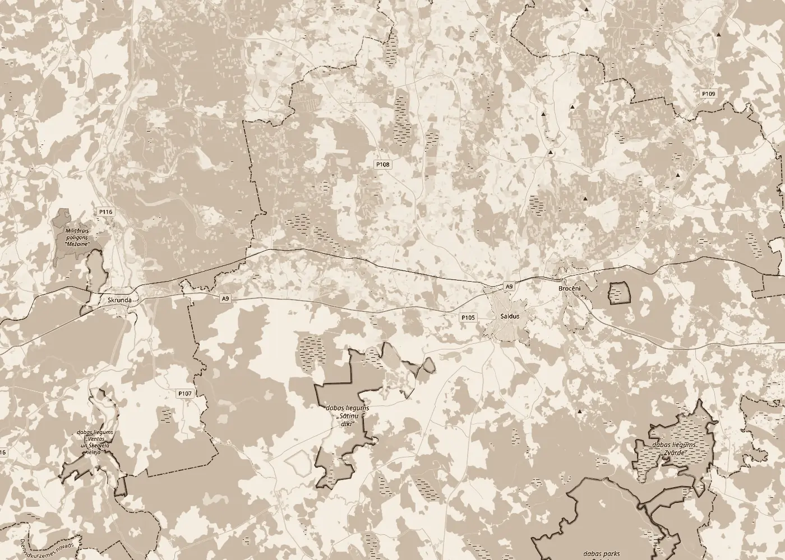

Vadīšana01
Ceļu būvdarbu vadīšana
Organizējam ceļa būvdarbus objektā: darbu secību, tehniku, materiālu piegādes un termiņus. Kārtojam būvdarbu žurnālu un segto darbu aktus.
Ceļu būvdarbi · Būvuzraudzība · Kravu pārvadājumiCeļu būvdarbi · Kravas
SIA „PAUGURIŅI” vada un uzrauga ceļu būvdarbus, veic ceļu uzturēšanas darbus un pārvadā kravas ar autotransportu. Mūsu bāze ir Zirņu pagastā, Saldus novadā.

km 01Pakalpojumi
Vadām un uzraugām ceļu būvdarbus, uzturam ceļus un piegādājam beramkravas uz objektiem.

VadīšanaOrganizējam ceļa būvdarbus objektā: darbu secību, tehniku, materiālu piegādes un termiņus. Kārtojam būvdarbu žurnālu un segto darbu aktus.
Pārstāvam pasūtītāju objektā: pārbaudām, vai ceļa konstrukcijas kārtas, materiāli un apjomi atbilst projektam un normatīviem.

UzturēšanaCeļu un laukumu uzturēšanas darbi: grants ceļu profilēšana, seguma atjaunošana, grāvju un caurteku kopšana. Apjomu saskaņojam pēc apskates.

KravasPārvadājam kravas ar autotransportu. Būvobjektiem piegādājam beramkravas, piemēram, smilti, granti un šķembas.
km 02Kā strādājam
Pastāstiet, kur atrodas objekts, kas jādara un kādos termiņos. Ja ir projekts vai tāme, pievienojiet to.
Apskatām objektu un izvērtējam darbu apjomu, piebraucamos ceļus un vajadzīgos materiālus.
Sagatavojam piedāvājumu ar darbu sarakstu un termiņiem. Kad viss saskaņots, slēdzam līgumu.
Vadām vai uzraugām darbus, piegādājam kravas un kārtojam būvdarbu dokumentāciju.
Nododam paveikto ar aktiem un izpilddokumentāciju.

km 03Uzņēmums
SIA „PAUGURIŅI” reģistrēta Uzņēmumu reģistrā 1998. gada 29. oktobrī. Atrodamies Saldus novada Zirņu pagastā, „Krastos”.
Būvniecības informācijas sistēmā esam reģistrēti kā būvkomersants ceļu būvdarbu vadīšanai un būvuzraudzībai.
Ja objekts ir citur, zvaniet vai rakstiet, pārrunāsim.

km 04Kontakti
Zvaniet vai uzrakstiet, kas jādara, kur un kad. Atbildēsim ar priekšlikumu.